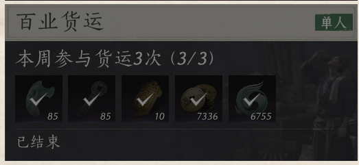
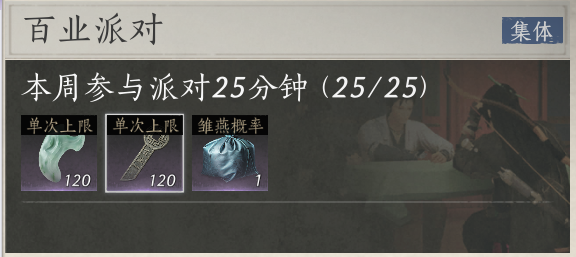
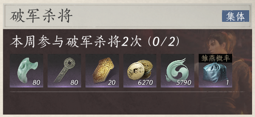
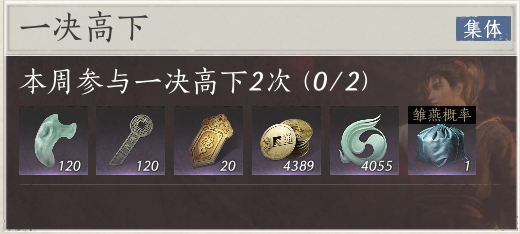
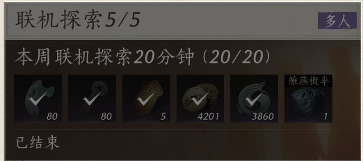

01
百業活躍度/千奇玨速刷指南
以下攻略感謝燕云十六聲國際服鏡花闕 @夜
加入百業是為了什么？最重要的是為了獲得千奇玨解鎖百業提供的加成。萌新們可以參考下面的攻略快速獲得千奇玨（注意所有的百業活動都是每周刷新，千奇玨沒有每周獲得的上限，多做多得～）。下列百業活動排序是按照最容易做的優先排序。需要速刷活躍度和獲得千奇玨的可以從上到下做：
百業貨運
駐地中間房間NPC溫無雙處，提交3輪材料，沒有的材料點擊圖標就可以在商店直接購買，也可以求助，幫別人提交材料每次也可以加10點活躍。

同遊閑趣
地圖上找雲遊印記地點，進入拍十張照片即可完成（不需要提交/保存。或者在派對或聯機掛機時F2選擇雙人動作“正經雙修”，大概10分鐘即可做滿。

忘憂時光
在百業駐地停留20min，可以和百業派對一起掛滿。點擊“百業派對”可以看見派對開始時間。


雙人動作
在百業駐地一個人在稍高的地方，譬如站燈柱上按F2選擇正經雙修，另一人按F交互后會因為高度差尋路失敗，交互失敗20次就能刷滿（如果兩個人都需要就交換再來一次）。派對期間可以找夥伴順便完成。制造高度差的效果參考下圖：


破軍殺將
每周兩次，可以上場打boss，不想上場右上角點觀戰，完成觀戰一場戰斗再退出就算完成。

一決高下
每周兩次，可以上場對決，不想上場右上角點觀戰，完成觀戰一場戰斗再退出就算完成。

聯機探索
每周聯機20min做滿。如果沒有可以聯機探索的夥伴也可以在百業頻道喊一聲。

暴富之路
好幾種做的方法：(1)賽季商店買1000短陌錢就能完成。 (2)開封皇宮每周天梯賽鬥蛐蛐。(3) 開封市賣司跑商 （具體做法可以參考攻略：【燕云十六聲】跑商攻略總結_網絡游戲新聞_17173.com中國游戲門戶站， 注意本攻略是基于北京時間。）